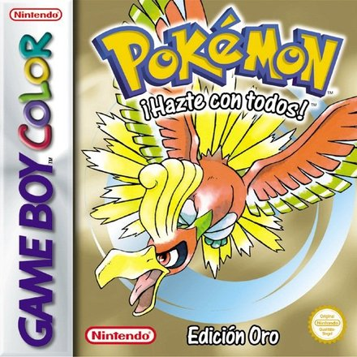
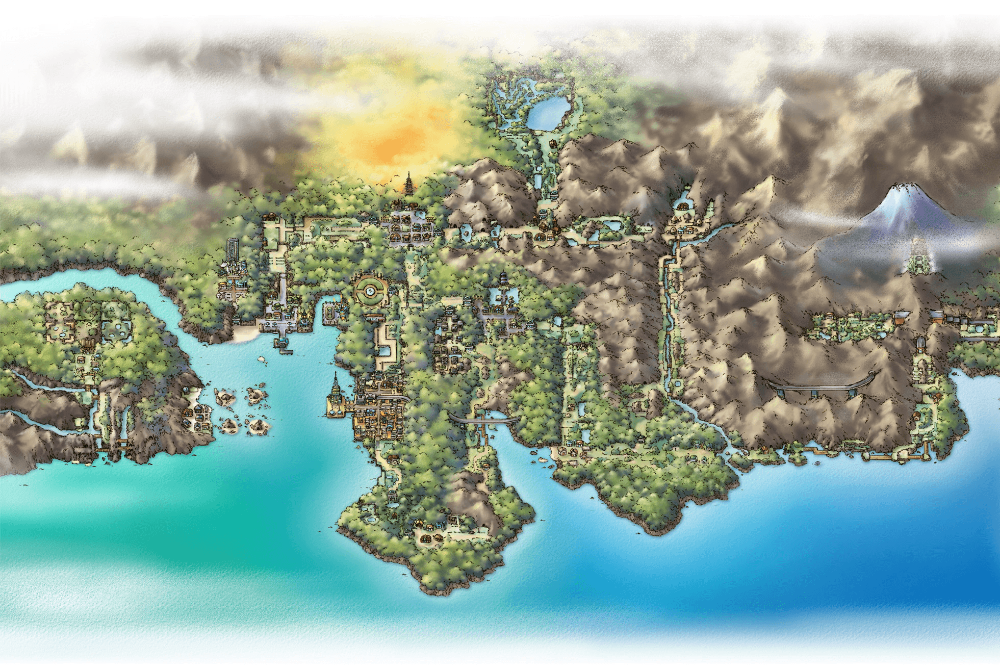
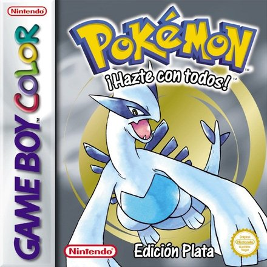
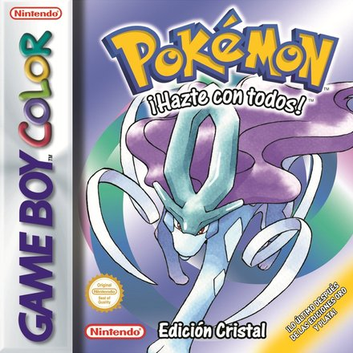
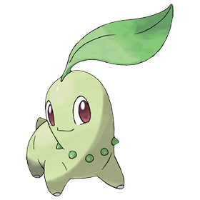
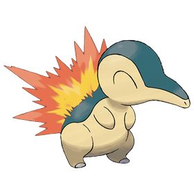
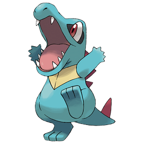

Pokémon Oro
Game Boy Color · 1999
Región de Johto · Oro y Plata (1999)
Johto está al oeste de Kanto y se inspira en la región de Kansai, en Japón. Es una región tradicional, con templos, torres antiguas y ciudades como Ciudad Iris, llena de historia, o Ciudad Trigal, la más grande de la región.
Hace unos 150 años, un rayo incendió la Torre Quemada de Ciudad Iris. Tres Pokémon murieron en el fuego y Ho-Oh los revivió como Raikou, Entei y Suicune. Lugia, el guardián de los mares, descansa en las Islas Remolino. Tres años después de los juegos de Kanto, el Team Rocket intenta volver: toma la Torre Radio de Ciudad Trigal para llamar a Giovanni.
El protagonista sale de Pueblo Primavera con el Pokémon que le da el Profesor Elm. Su rival es un chico misterioso que roba un Pokémon del laboratorio. Después de ganar la Liga puede viajar a Kanto, conseguir sus medallas y enfrentarse a Rojo en la cima del Monte Plateado.


Game Boy Color · 1999

Game Boy Color · 1999

Game Boy Color · 2000


